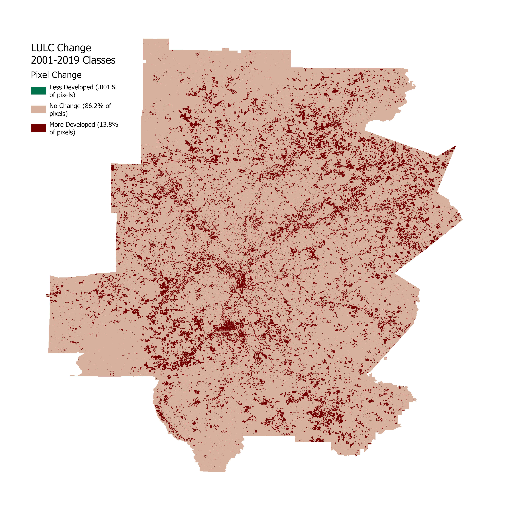
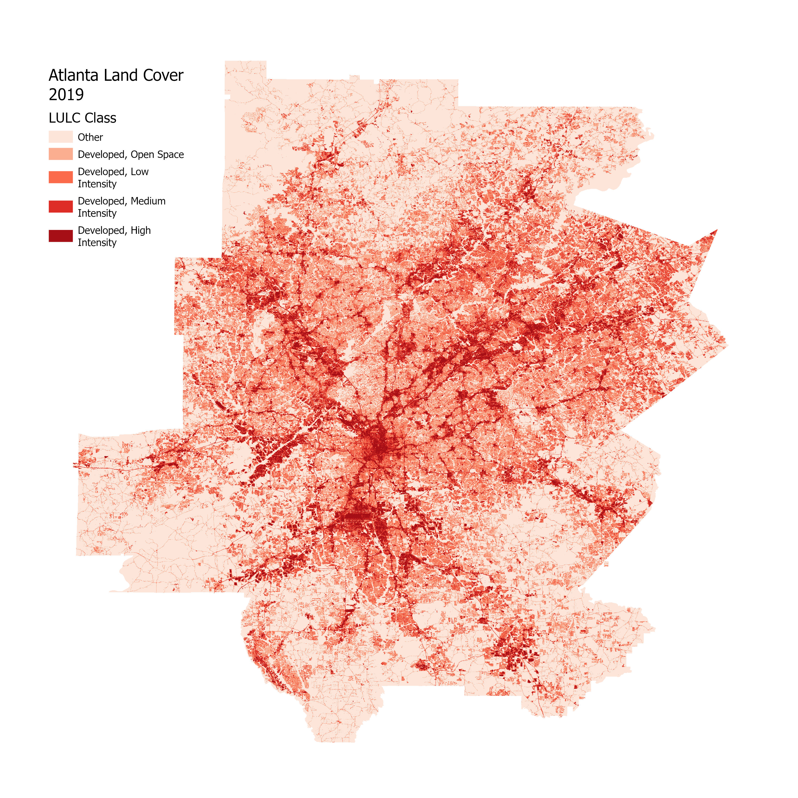
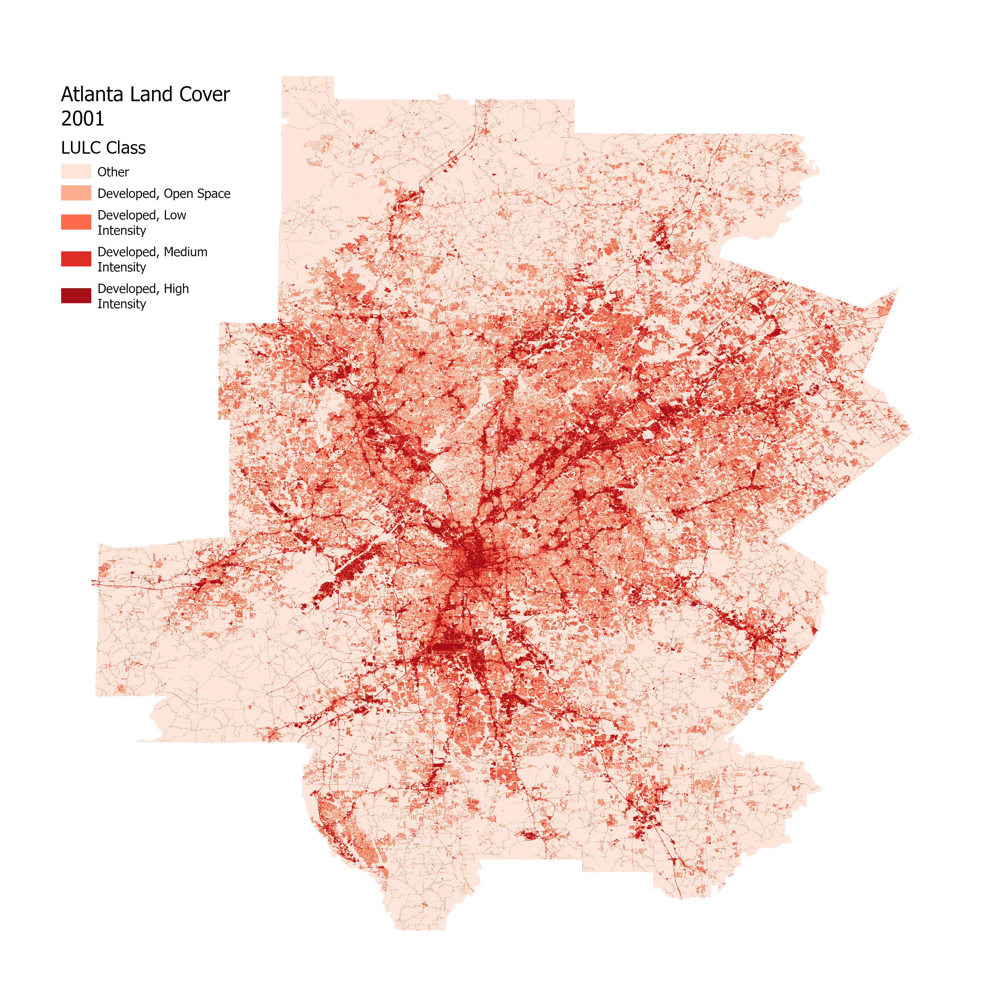
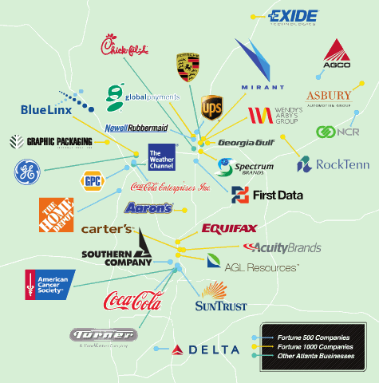
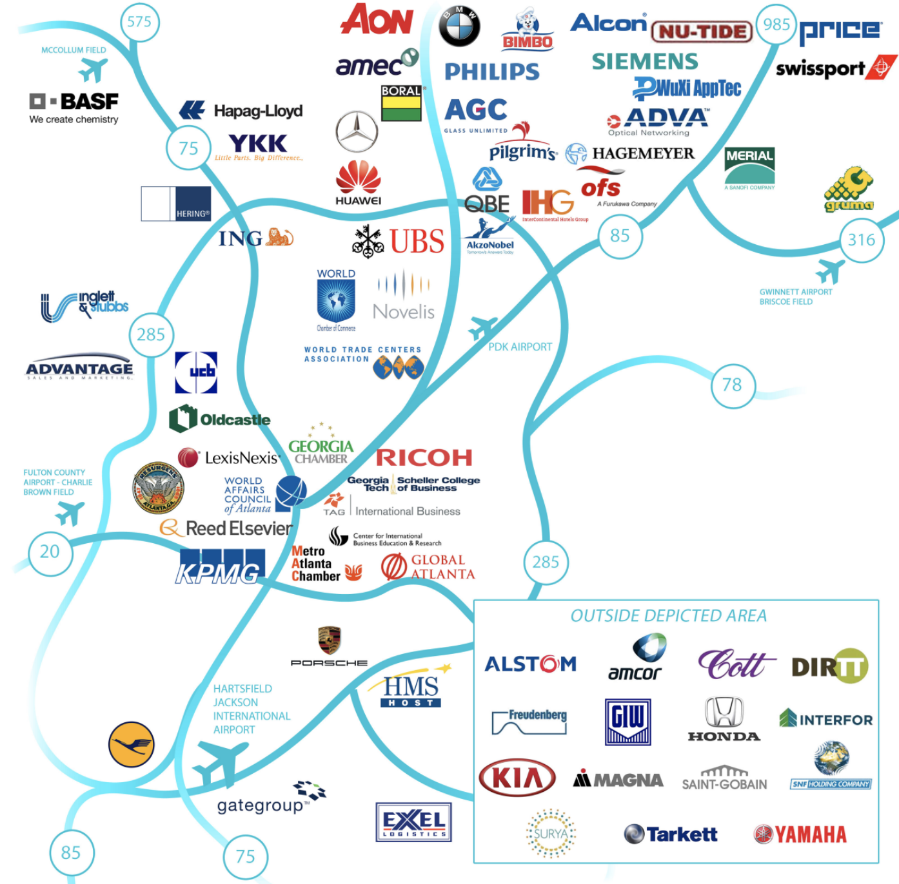
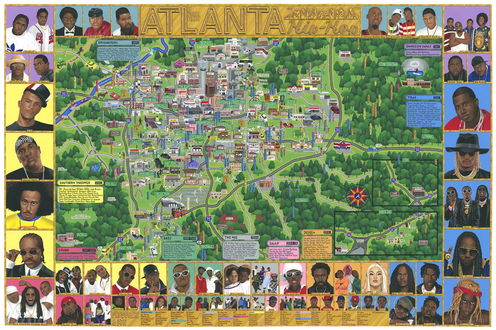

The following webpage explores prevailing trends in the relationship between globalization and urbanization
as exhibited by Atlanta, GA. I want to preface my exploration of these processes in Atlanta with a bit of a disclaimer:
Urbanization in every city looks different due to historical pathways that have determined how a given city is tied into the global fabric.
There is not one uniform process of urbanization in a globally linked world, because every urban area has developed and
continues to develop in unique “national political and cultural contexts” (Abu-Lughod 1999, p. 54). Given these differences, the
timelines and routes each city elects help shape a given city’s distinct role in global interactions; cities are expressing and playing
their part in globalization through unique combinations of F.I.R.E. industries, arts, food, media creation, tourism, diversity, exports
and countless others. The processes of globalization and urbanization are incredibly complex and
therefore difficult to pin down (especially given how place-dependent the shapes they take are); this webpage does not
aim to narrowly define globalization/urbanization and their interactions, but instead encourages viewers to consider potential trends
in these ever changing and place-dependent processes.
Urban Land Cover from 2001 to 2019: Thinking about Atlanta's Urbanization and Suburbanization



Data sourced from USGS National Land Cover Database
The above maps offers an interactive visualization of sprawl in the Atlanta region from 2001-2019 (data sourced from National Land Cover Database).
The Atlanta region consists of 11 counties that swallow the majority of the expanse of the city's sprawl. Downtown Atlanta is marked by the area of "Developed, High Intensity"
land use and land cover at the center of the map. The 5 classes in the map were selected to highlight only changes in developed areas which are what we are primarily concerned with
as they exhibit sprawl and urbanization most effectively. Processes of both urbanization and suburbanization are modeled by changes in land use and land cover maps from 2001 to 2019.
The map under the button "Change" highlights spatial patterns commonly observed with urbanization (especially in the United States) most clearly. This map shows that
majority of downtown Atlanta became more developed over the 18 year window with most of these shifts from medium to high intensity developed land use and land cover.
The National Land Cover database associates high amounts of impervious surfaces, apartment complexes,
and commercial/industrial buildings with high development intensity. Land cover classified as "Developed, High Intensity" is additionally described as: "highly developed areas
where people reside or work in high numbers" (NLCD). Most of the areas that undergo change within Atlanta's Downtown move
from the "Developed, Medium Intensity" class in 2001 to the "Developed, High Intensity" class in 2019, which indicates that these areas are becoming more built up and densley populated
by working and residential populations. Urbanization is commonly accompanied by increasing concentrations of people, jobs,
high density commerical/residential spaces, infrastructure, and resources (implosion)— Atlanta's land use patterns from 2001 to 2019 certainly indicates
visualize this trend.
Areas surrounding Atlanta's downtown are also shifting into higher land use
land cover classes in terms of development. Land that is classified as developed low and medium intensity land use and land cover
commonly include single-housing family units and a good amount of impervious surfaces (AKA suburbs).
The areas that are experiencing change outside of Atlanta city center are commonly transitioning into these classes; these
shifts are an indicator of suburbanization because people are moving to areas characterized by single family homes with a
lower degree of development than downtown. We can assume that processes of suburbanization over the 20 year window captured by the maps
are enabling more people to live, work, and shop in these medium to low density areas.
A Point of Particular Interest: Hartfield-Jackson Airport
The Hartfield-Jackson Airport, located just south of Atlanta, is the busiest airport in the world. In 2022, 93.7 million passengers moved
through the airport; with this number of travelers, the aiport earned title of the world's busiest airport by a significant margin of over
20 million passengers. The rise of Atlanta's airport is intertwined with historic investments in the city's through infrastructure and capital.
Since the 1920s Atlanta leaders had "the support of the local community and the commitment of the state to attracting aviation companies"
which sparked the growth of the Hartfield-Jackson Airport (CNN).
In 1950 Delta Air Lines declared the Atlanta airport to be its "hub" under their new "hub and spoke network" (CNN).
With this decision, Delta Air Lines located their world headquarters in Atlanta and has grow enormusly as a company since. Delta is
an international company built on connecting people, capital, and goods in a global world. This move certainly boosted the early potential of the
Hartfield-Jackson Airport to connect a quickly urbanizing area to an increasingly connected world.
Other factors shaped the expansion of the Hartfield-Jackson. Perhaps environmental determinism played a part in the city and the airport's expansion;
the airport is within a "two-hour flight of 80% of the US population," making it a prime, ideal site for a major airport (CNN). But as noted by scholars like Janet Abu-Lughod,
alongside environmental factors, we must weigh historical factors suchas the pathway of investment in aviation that Atlanta community members and leaders chose(CITE).
Another variable in the airport's success is its connection through transit to key areas of Atlanta; the MARTA system provides travelers with direct
routes to business centers— a characteristic of airports that have historically "done very well" (CNN). The airport's connectedness via transit
is another result of the city's decision to invest in public infrastructure (MARTA) that serves the development of the airport. The site selection of
Hartfield-Jackson Airport took into account the facility's ability to expand; looking at the above map, we see the airport is located in a more suburban area far, "ten miles south" of
Atlanta's downtown (CNN). The airport was intentionally located among the explosion of Atlanta and MARTA was built to connect that specific piece of explosion to the implosion located
in Atlanta city center.
The planning behind the Hartfield-Jackson Airport and accompanying infrastructure reveals historical decisions that invested in the development of Atlanta
as a growing urban area (financially, spatially, and infrastructure wise). What does this mean for Atlanta in terms of its embededness in global networks?
Due to the airport's traffic
Atlanta is experiencing record amounts of people moving through its reach. We can also think about the enormus amount of cargo (imports and exports)
that comes along with these planes; in 2014, Hartfield-Jackson Airport ranked 10th on the continent for cargo volume (CITE). This amount of people and goods moving
through one space certainly solidify it as a link in global networks. Trujillo and Parilla identify "Infrastructure Connectedness" as one of five
factors influencing a city's globality by arguing that firms "rely upon global
access... to participate in the efficiencies of global value chains" (CITE11). The next section will explore Atlanta as a home to multiple major, global
firms, and we can imagine the role of Hartfield-Jackson Airport in connecting these firms to clients, satellite offices, resources, and capital.
Measuring Atlanta as a World City by Traditional Definitions
Friedmann and Wolff’s (1982) world city hypothesis outlined traditional methods of thinking about and measuring world cities. According to them, world cities are
“tightly interconnected with each other through decision-making and finance, [and] they constitute a worldwide system of control over production and
market expansion" (p. 17). The two elements Friedmann and Wolff consider when measuring a world city are: “the form and strength of the city’s integration”
and “the spatial dominance assigned by capital to the city” (p. 17). Work by Saskia Sassen also largely informed traditional understandings of global cities.
To Sassen, global cities emerged in tandem with the increased globalization of the 1980s as centers for advanced corporate services (ACS) to manage
communication, finances, transactions, legal procedures, and organization for internationally linked businesses.
The above exploration of Atlanta's Hartfield-Jackson Airport certainly speaks to the city's physical integration into a global network. Shifting into thinking
more about Atlanta's economic integration into a global network, the following visual offers a starting point:
Major Firms with National Headquarters in the ATL Region

Image borrowed from movinglabor.com
In 2014, Atlanta ranked third in the US for number of Fortune 500 Headquarters (CITE). Major, international firms are locating their US and world headquarters in Atlanta above
countless other cities. The statistic embedded in this map and the capital that these firms bring to Atlanta would certainly produce a relatively high ranking/measurement for the city in the lens of Sassen, Friedmann and Wolff’s scholarship.
These firm headquarters are performing "command and control" functions in Atlanta
that ripple out to their globally linked locations by managing communication, finances, transactions, legal procedures, and organization— these firms link Atlanta into the finance heavy aspect of globalization: the
global economy. Additionally, a concentration of technology seems to be on the rise in Atlanta; the concentration of technology and resources are commonly
associated with urbanization and traditional global city concepts (particularly Sassen's). The following map visualizes tech companies in the Atlanta region:
International Tech Businesses in the Atlanta Region

Image borrowed from Technology Association of Georgia
The "Atlanta's Emerging Developments" brochure published by the City of Atlanta in 2014 names "Creating a Thriving Environment for Technology
and Innovation" as one of a limited number of missions. They boast of investments in clean energy, the Atlanta tech village, medical technology, and Startup Atlanta;
these initiatives are supporting jobs creation, innovation, and companies in tech. We see a large sum of tech companies locating in the wider Atlanta region in the above
map which in tandem shows the explosion of urban growth (financially and spatially). Jobs and companies are expanding to more suburban areas through sprawl and increasing the footprint of
urban influence/fabric. Concentrations of technology, innovative thinkers, and talent pools are characteristics of what Sassen identifies as a global city.
In the next section will dive into Atlanta's influence and linkage in the global network outside of finance and technology sectors.
Atlanta as a Global City by Other Measures
While traditional scholarship on global/world cities has primarily focused on a city's influence in the global economy, urban geographers like Jennifer Robinson,
Janet Abu-Lughod, AbdouMaliq Simone, and more have encouraged the field of uran studies to consider different understandings of cityness. Robinson asks readers
Robinson (2002) highlights that traditional approaches for measuring world cities were designed based upon a “small group of (most western) cities” understood in
previous/current urban theory to be “the aspiration of many cities around the world;” the limited scope of these measurements is a product of the epistemological,
western roots from which the theories emerged from and were developed (p. 61, 65). Janet Abu-Lughod (1999) explains that comparing cities is seemingly impossible, because
you can’t separate the historical contexts that have shaped each city’s path from the chosen metric of comparison. AbdouMaliq Simone encourages us to see cities as
spaces of opportunity, chance, and discovery. He highlights the ways that people in urban spaces are embracing differences and creating new ways of organizing. He
emphasizes that cities should not be characterized by what they lack due to all of the innovation taking place(CITE).
Exploring ideas from these authors and others reveal a focus not on measuring and comparing cities, but investigating each city for what it is bringing to the table,
understanding the complexity that accompanies every place. With this in mind, the remainder of this section will explore Atlanta's global influence in
arts, culture, and politics.
Atlanta's Hip-Hop as a Global Sensation

>
Map by Joseph Veazey
Hip Hop in Atlanta emerged in the 1980's as a place-based, Black art. Atlanta's youth were producing new sounds that were commenting on and rooted in their community's political and cultural
experiences. Decades later, Atlanta artists continue to dominate this global art form, and the music has taken new shapes, become widely popularized, and been adopted (in some cases appropriated) by pop artists.
A piece by King Williams, an Atlanta based film director and author, argues "Atlanta is Hip Hop; Hip Hop is global – embrace it" (CITE). Hip Hop is a
global sound with messaged stemming from Black experiences in Atlanta; this art has historically and continues to share these place-based experiences with the world.